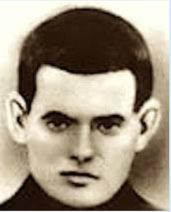

Beato David Carlos de Vergara Marañon
El Beato David Carlos de Vergara Marañón fue un religioso escolapio fusilado el 28 de julio de 1936 tras negarse a renunciar a su fe. Por este sacrificio, el papa Juan Pablo II lo proclamó Beato el 1 de octubre de 1995
Vida de servicio
Desarrolló una vida humilde como religioso escolapio en Peralta de la Sal, desempeñándose como cocinero y hortelano, destacando por su sencillez, oración y fidelidad a su vocación.
Persecución y martirio
En 1936, durante la persecución religiosa en España, rechazó salvar su vida a cambio de abandonar el hábito y fue llevado a la muerte el 28 de julio, lo que motivó su posterior beatificación.